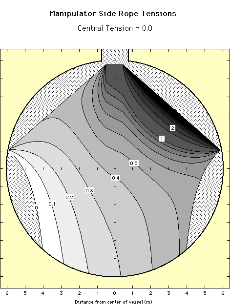
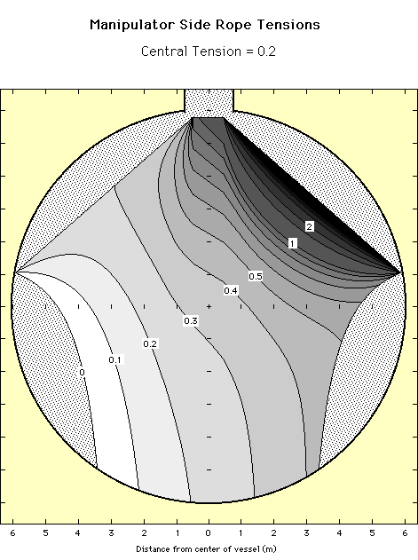

Calibration Manipulator
Software
Calibration Manipulator
Software
Side Rope Tensions
The plots below show the tension on the right side control rope as
a function of position for a central rope tension of zero and 20% of
the source weight. The tensions are plotted as a fraction of the source
weight. These calculations do not include the effects of an umbilical.

